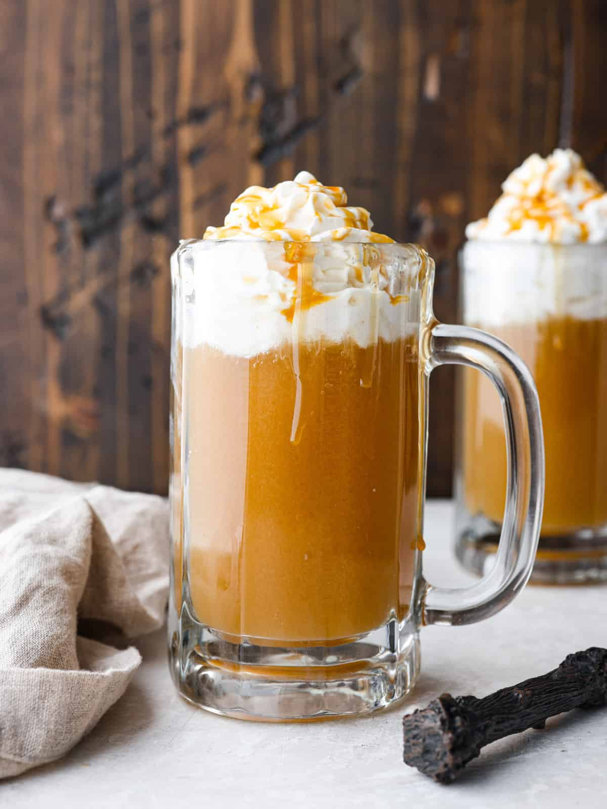

Butterbeer

Description
Butterbeer is a (sort of) fictional beverage that the Harry Potter book characters drink when they visit “The Three Broomsticks” and “Hog’s Head Pub.” (Think cream soda meets butterscotch flavor with a whipped topping.)
Ingredients
- 1 cup (8 oz) cream soda
- ½ cup (4 oz) butterscotch syrup (ice cream topping)
- ½ tablespoon butter
- Heavy cream (optional)
Steps
- Pour the butterscotch syrup into a bowl.
- Add the softened butter. Combine the syrup and butter.
- Pour cream soda into the mixture and stir. Set aside.
- In a separate mixing bowl, whip heavy cream until
it forms stiff peaks.
- Pour the cream soda and butterscotch mixture into
clear mugs.
- Top the butterbeer with a few dollops of whipped cream and enjoy!